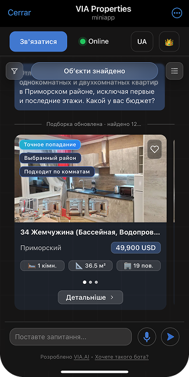
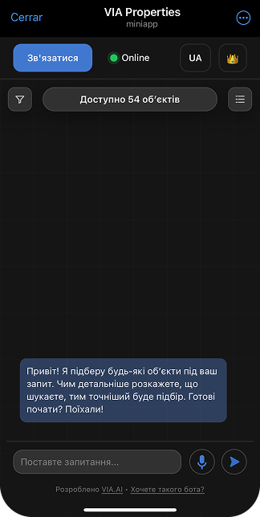
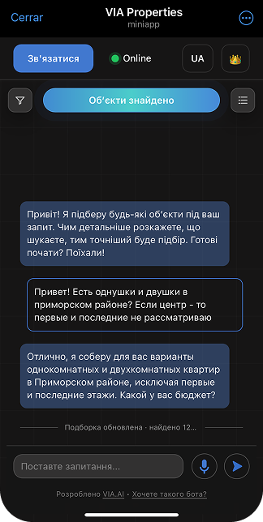
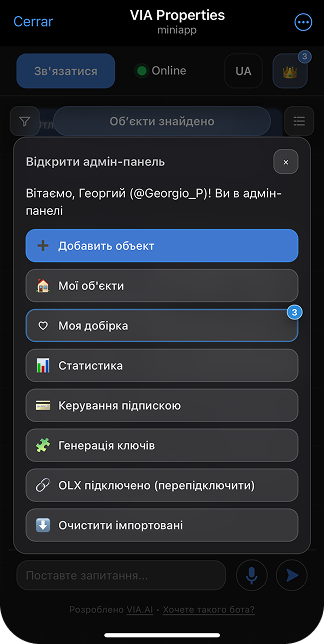
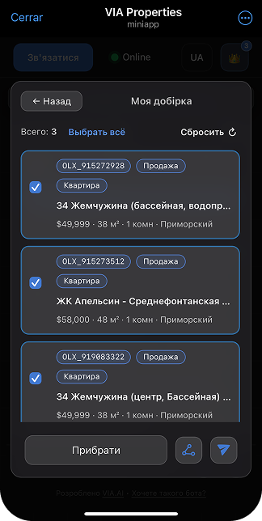
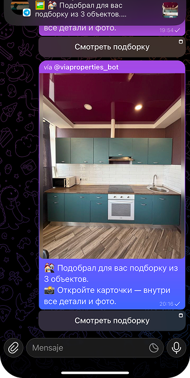

Понять запрос человека
Текстовый и голосовой сценарий вместо формы с длинным списком полей.
ESTYLESPAIN / AI ПРОДУКТ / НЕДВИЖИМОСТЬ
Собственный AI-инструмент консультирует клиентов, понимает намерение, подбирает объекты и ведёт пользователя к обращению.

Посетителю сайта нужен быстрый ответ на вопрос о недвижимости. Команде продаж — понимание запроса, контакт клиента и следующий шаг без ручной обработки каждого первого сообщения.
Текстовый и голосовой сценарий вместо формы с длинным списком полей.
AI учитывает бюджет, локацию, комнаты и другие условия поиска.
Пользователь переходит к карточке объекта, заявке или менеджеру в нужный момент.
История диалога и AI Summary помогают команде видеть реальные вопросы и намерения клиентов.
Один интерфейс для диалога с клиентом, подбора объектов и передачи обращения менеджеру. Продукт работает внутри Telegram и открывается с телефона.


После открытия мини-приложения пользователь сразу получает приветственное сообщение и может начать общение без регистрации и сложных действий.
Пользователь пишет так, как привык общаться с человеком. AI анализирует запрос, понимает намерение и сразу начинает поиск подходящих объектов.
На основании диалога AI формирует подборку недвижимости, показывая только наиболее релевантные варианты.
Добавляйте новые объекты, редактируйте существующие и управляйте собственной базой недвижимости через удобный интерфейс.
Формируйте подборки объектов буквально за несколько секунд и сохраняйте их для каждого клиента.
Любую подборку можно мгновенно отправить клиенту в Telegram или поделиться красивой карточкой объекта вне Telegram.



После подключения вы получаете полностью готовое Telegram Mini App, брендированное под ваше агентство.
Используется в ежедневной работе агентства
Реальная рабочая система
Используется в ежедневной работе агентства